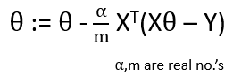

HOME BLOG EBOOKS ABOUT CONTACT SHOP
Speed and Efficiency is of the essence in Machine Learning. A good algorithm should not only provide accurate results, but also be fast in doing so. So a lot of research goes on in that area and as a result, data scientists have found that the computation is more efficient in the form of vectors (matrices).
For example, the hypothesis function in linear regression is given by,
Suppose we need to calculate the output for one example, given the values of n input features and n parameters. The obvious way to implement such a function would be to create a for loop as shown below.
While this implementation maybe fine for a smaller values of n, this simply isn’t efficient for larger values of n. Instead, by expressing the inputs and the inputs as 2 vectors (matrices), the implementation becomes way easier and more efficient.
Generally, for training data with multiple features and training examples, the matrices can be formed as shown:
The Hypothesis function in the vectorized form is given by:.
The cost function in linear regression is given by:
In vectorized form, this equation corresponds to:

Squaring in algebra doesn’t correspond to squaring in matrix, so to get the squared value, the vector/matrix (Xθ-Y) is multiplied with its transpose. You can try it out with a random column matrix, as shown below.
The update rule for the parameters using Gradient descent method is given by:

In vectorized form, this equation corresponds to:

In normal equation, we find the partial derivative of the cost function with respect to the parameters and equate it to zero.

The complexity in calculating inverse of a matrix increases as its order increases, hence this method is not suitable for large no. of input features.